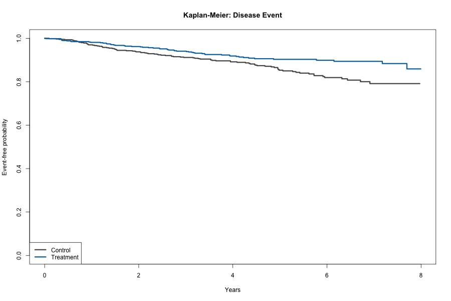

Question: Is treatment associated with time to the disease event when other-cause events compete?
We simulated 1,200 participants with censoring and two mutually exclusive event types. The primary model is an adjusted cause-specific Cox model; Kaplan-Meier estimates and Schoenfeld-residual diagnostics support model review.
Adjusted disease-event HR: 0.63 (95% CI 0.45–0.88; p=0.00625).

The cause-specific hazard ratio answers an etiologic rate question. Competing events are retained explicitly in the dataset and should not be interpreted as ordinary noninformative censoring for absolute-risk questions.
Run Rscript run_all.R. Data are synthetic.
Question: Is treatment associated with time to the disease event when other-cause events compete?
We simulated 1,200 participants with censoring and two mutually exclusive event types. The primary model is an adjusted cause-specific Cox model; Kaplan-Meier estimates and Schoenfeld-residual diagnostics support model review.
Adjusted disease-event HR: 0.61 (95% CI 0.44–0.85; p=0.00363).
The cause-specific hazard ratio answers an etiologic rate question. Competing events are retained explicitly in the dataset and should not be interpreted as ordinary noninformative censoring for absolute-risk questions.
Run Rscript run_all.R. Data are synthetic.